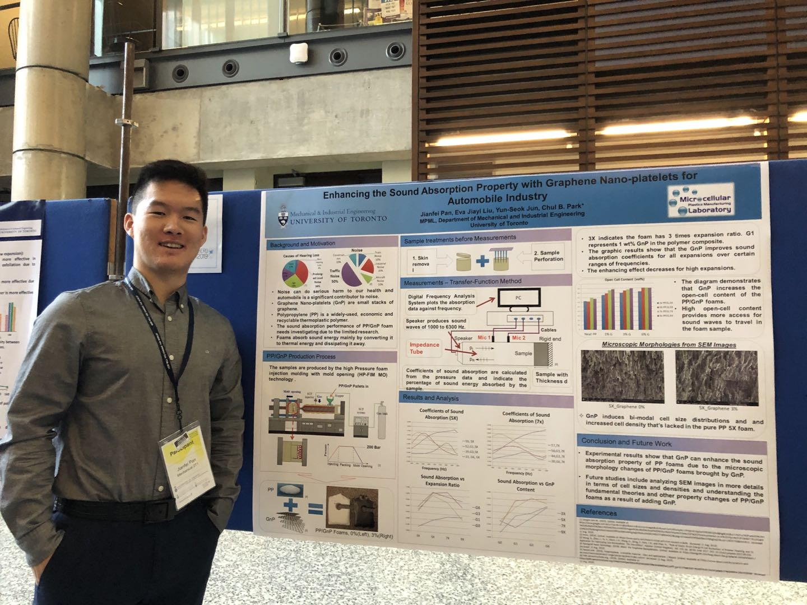
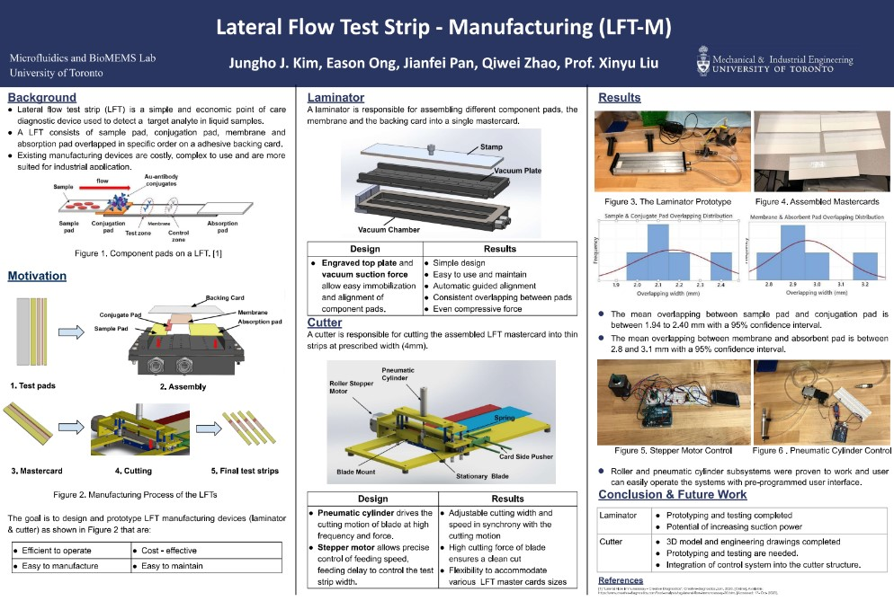
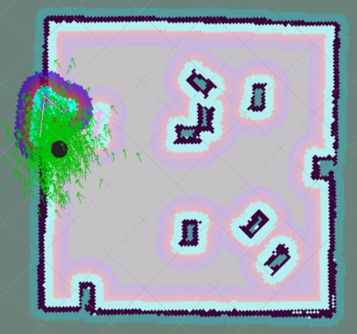
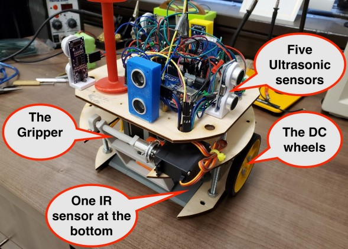
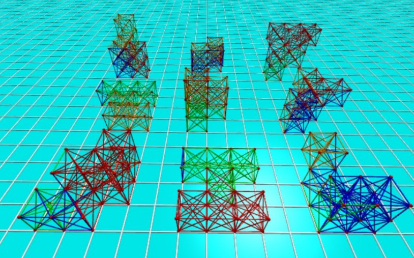
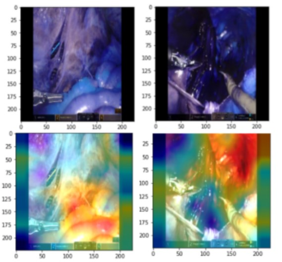
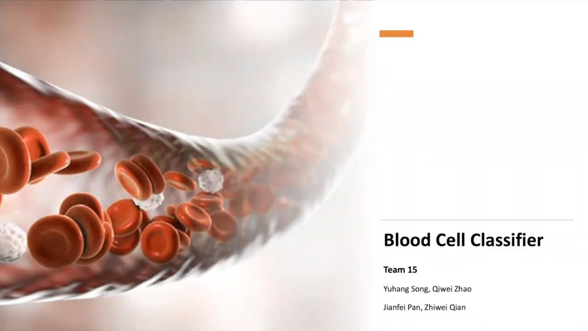
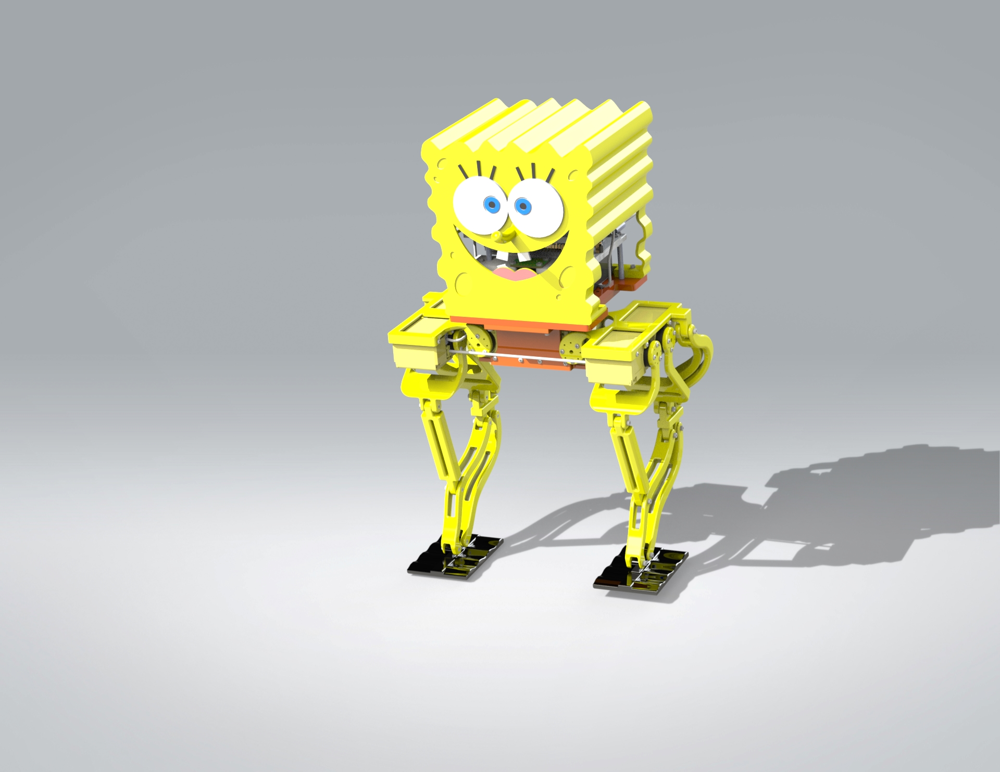
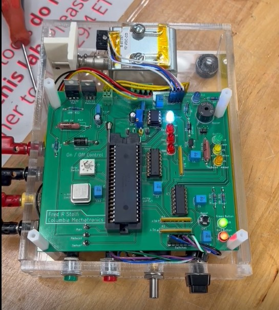
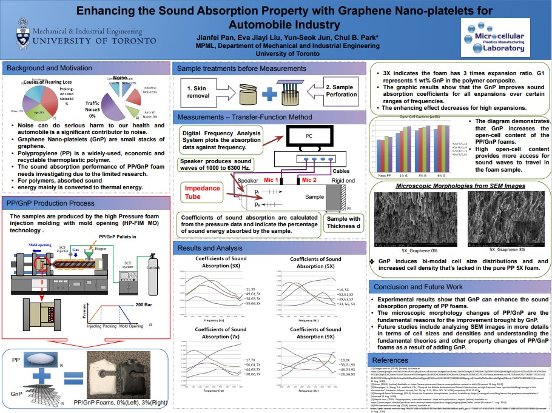

November 08, 2022
I am currently pursuing a master's in Robotics and Control at Columbia University and focus on
studying advanced robotics algorithms,
and machine learning, and honing my teamwork, and communication skills.
I am an experienced researcher in advanced manufacturing technologies such as electrospinning,
in-situ fibrillation, micro-compounder, etc, as I have worked as a research assistant at the Microcellular
plastic manufacturing laboratory at the University of Toronto.
I am a hard worker and a keen learner, who aspires to conquer multidisciplinary challenges
and provide solutions to engineering problems.
Skills and specialties: Python, C/C++, ROS, Matlab, PyTorch, Tensorflow, Computer Vision, Robotics,
SolidWorks, Arduino, Machine Design, Machine Learning, Deep Learning, Data Science, Dynamics, Kinematics, FEA, Ansys, Manufacturing,
Critical Thinking, Communication Skills, Analytical and Conceptual Thinking.


At University of Toronto Microfluidics and BioMEMS Lab (MBL), I directed a group of four via an iterative design process from brainstorming stage till final prototyping.
Led SOLIDWORKS modeling and machine design for laminator and high-speed automated LFT cutter incorporating principles of solid mechanics and shaft designs, bearing selections, and conducted various failure modes and critical stresses analysis.
Created Arduino codes to establish an user interface Nextion Display accomplishing adjustable feeding and cutting rates.
Won First Place MIE Capstone Project Award and Centennial Project Award offered by University of Toronto award office and sponsors.

Coded in C++ in ROS and applied GMapping package to achieve obstacle avoidance and complete simultaneous localization and mapping of the unknown environment and key obstacles within 15 minutes.
Programmed Turtlebot to find seven victims in an imagined unknown hazardous environment deploying an existing frontier exploration package, designed a convolutional neural network in Pytorch to identify the seven user emotions.
Devised algorithms to respond with unique interactions showing primary and secondary emotions in forms of audio, motion, and visual responses to all victims, with simulations done in Gazebo simulator and information visualized using Rviz.

Led the hardware design in SolidWorks and assembled the rover in Solidworks with the designed parts and online CADs.
Spearheaded maze-solving strategy and primarily programmed flood fill algorithm in rover to achieve pathfinding, navigation, and
load transferral between pick-up and drop-off locations.
Led major system design and achieved an integrated functionality of obstacle avoidance, localization, self-navigation, and block pick-up and transferral in both MATLAB simulation and physical test-runs.

Designed and created a simulator for a bouncing and breathing soft robot mode of string and masses in Python and rendered it in 3D graphics.
Applied evolutionary algorithms to extensively and computationally breed the controllers and structures of a soft robot in Python utilizing the Google Cloud Platform. Eventually, the soft robot can freely traverse without stumbling.

Explored and Designed deep neural networks to classify surgical phases for Minimally Invasive Surgery (MIS) for every frame in the video.
Preprocessed the data in Python by converting 70 videos of 30 minutes to images with corresponding labels provided by the surgeons.
Built a baseline model of convolutional neural networks and fully-connected layers and trained it with the prepared dataset in Pytorch.
Created classifier models and transfer-learned with pretrained AlexNet, EfficientNet, Vision Transformer provided by Pytorch by fine tuning several layers of the original models with prepared surgical dataset.
Trained all models in local environment and Google Cloud Platform all with CUDA accelerated computing, and documented all results in an engineering report with transfer-learned EfficientNet achieving the best 0.92 F1 score outperforms the 0.68 F1 score baseline model.

Acquired image data of various blood cells from Kaggle and performed data cleaning, splitting and augmentation in Python.
Applied transfer learning techniques and specifically pre-trained Alexnet, VGG16, and GoogLeNet as feature extractors in Pytorch.
Built customized convolutional layers followed by fully-connected dense layers classifier and trained it with CUDA in Pytorch, analyzed confusion matrix of results, and accomplished 94.9% validation accuracy and 78.9% test accuracy for Lymphocyte cells.

Designed a legged robot from freehand sketch ideation to CAD in Solidworks.
Built the robot with 3D printed materials and standard electronic components purchased from Amazon.
Programmed the robot to walk fast and simulated it with Python.
Recorded the entire project progress in a short video and demonstrated walking of the final physical robot.
This project is currently in progress.

Utilize the logics and built circuits to achieve glue logics and safety circuit for an alarm system.
Built analog active lead-lag compensator that uses LF 356 and applied it to achieve steady magnetic levitation.
Wrote the entire program in assembly language to control PIC16F737 and PIC16F747 to achieve various On/Off control on a solenoid system.
Wrote Embedded C programming to control stepper motors.

Devised and prototyped fixtures and enclosures for Yubikeys, Yubikey programming stations, and Just-In-Time (JIT) stations.
Mastered in the use of Formlabs Form 3/3+ printer and sheet metal manufacturing technologies in prototyping.
Devised and delivered a dispenser design helping to more efficiently and accurately fulfill online Yubikey orders.
Established remote control on Universal Robots UR5e robot arm using the Primary/Secondary, and Dashboard interfaces, and programmed UR5e to transfer Yubikeys to desired locations with Robotiq vacuum gripper.

I was a Research Assistant for two summers and one semester at Univeristy of Toronto, MPML laboratry, where I won two summer research awards for active engagement in research activities including computer aided design, structural analysis, advanced manufacturing technologies , and advanced analysis tools such as SEM.
Built and assembled the complete electrospinning technology setup in SOLIDWORKS and installed the physical setup in the lab and studied micro/nano morphologies of electrospun TPU fibers of different concentrations.
Prepared and manufactured ultra-tough materials of polypropylene (PP)/Nano-fibrillated Ethylene Propylene Diene Monomer (EPDM) composites using in-situ fibrillation technology and UV Crosslinking.
Discovered acoustic properties enhancement of foams with GnP content, and concluded bi-modal cell structures a main reason for improved sound absorptivity of polymeric composites from SEM images. This poster summarizes
of my major contributions in developing novel acoustic mateirals, which was publicly presented at the Undergraduate research day in 2019 summer by myself.